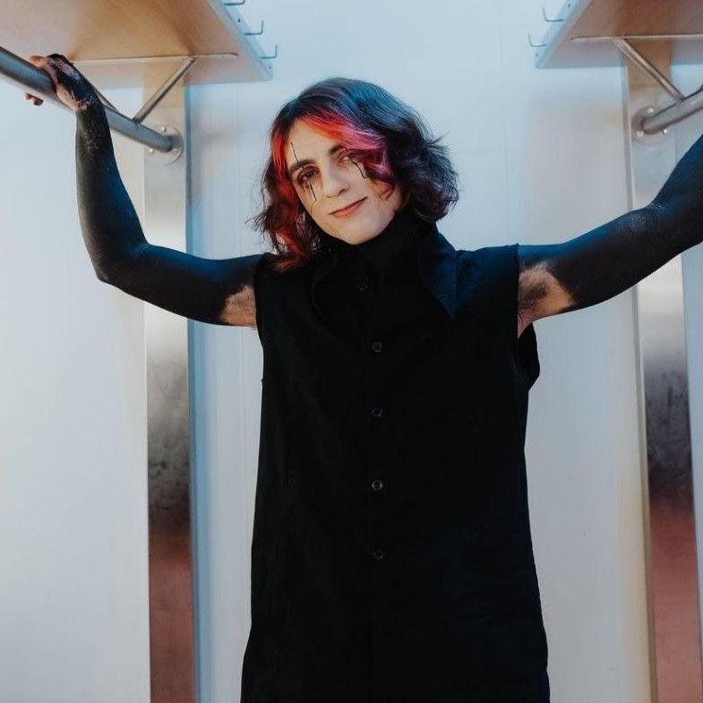

Крістофер "Motionless" Черуллі
Народився: 17 жовтня 1986 р. (36 років), Скрентон, Пенсільванія, США
Співак і автор пісень металкор-гурту Motionless In White, який заснував у 2005 році, будучи старшокласником,
разом із барабанщиком Анджело Паренте, гітаристом Френком Полумбо та басистом Кайлом Вайтом, які покинули гурт.
Наразі Черуллі є єдиним оригінальним учасником гурту. Він також взяв участь у пісні New Years Day — Angel Eyes,
а також знявся у відео на пісню In This Moment — Whore.
Ріккі «Horror» Олсон
Народився: 1 вересня 1988 р. (34 роки), Сіетл, Вашингтон, США
Приєднався до гурту як гітарист і бек-вокаліст у 2009 році. Він став постійним учасником гурту після виходу
Френка Полумбо. Він вирішив перейти з бас-гітари на ритм-гітару, коли Ті Джей Белл покинув гурт в 2011 році.
У нього також є дебютна збірка оповідань під назвою «Gloom», опублікована North Lake Press. Він також часто
пише статті та дописи в блогах, які публікуються на різних веб-сайтах. Зараз він проживає в північно-східній
Пенсільванії і розділяє свій час між життям зі своєю дівчиною та гастролями по всьому світу зі своїм гуртом.
Вінні Мауро
Народився: 22 листопада 1993 р. (29 років), Пенсильванія, США
Гастрольний барабанщик американського метал-гурту Motionless In White , який почав виконувати цю роль
у 2014 році. Перед славою він був у групі Empyreal, коли йому запропонували гастролювати барабанщиком MIW.
Він публікує кавери барабанів на своєму YouTube-каналі ichenzoi.
Джастін Морроу

Народився: 11 травня 1990 р. (32 роки) Каледонія, Нью-Йорк, США
Американський басист і музикант, який спочатку отримав визнання як учасник металкор-гурту
Ice Nine Kills. Він отримав додаткову популярність після приєднання до групи Motionless In White у 2019 році.
Він вперше виступив з Ice Nine Kills як ритм-гітарист у 2009 році.
Раян Сітковскі
Народився: 8 січня 1991 р. (32 роки), Пенсільванія, США
Співпрацював із стримером Twitch, який став головним гітаристом американської металкор-групи
Motionless In White . Він замінив колишнього гітариста Майкла Костанцу. Він приєднався до гурту в
2009 році і був частиною першого офіційного синглу гурту «Ghost in the Mirror». Він грав разом із
іншими струнними інструменталістами Рікі Хоррором (ритм-гітара) та Девіном Солою (бас).